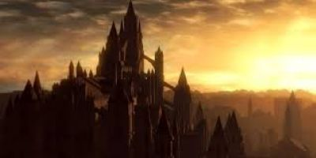

The Dark souls series is a collection of games developed by the company FromSoft that encapulates its players through its troublesome, yet rewarding narritve, and it enveloping world traversal and building. Each game is serate and fresh while still keeping a consise and linear story that connects together. As a knight you are destined to bring the order of a new world by destroying entites that stop the cycle of their world from being fufilled and extinguishing the old flames to start asnew.
| Boss | Location | Game |
|---|---|---|
| Abyss Watchers | Farron Keep | Dark Souls III |
| Poniff Sulyvahn | Irithyll Of teh Boreal Valley | Dark Souls III |
| Ornstien and Smough | Anor Londo | Dark Souls I |